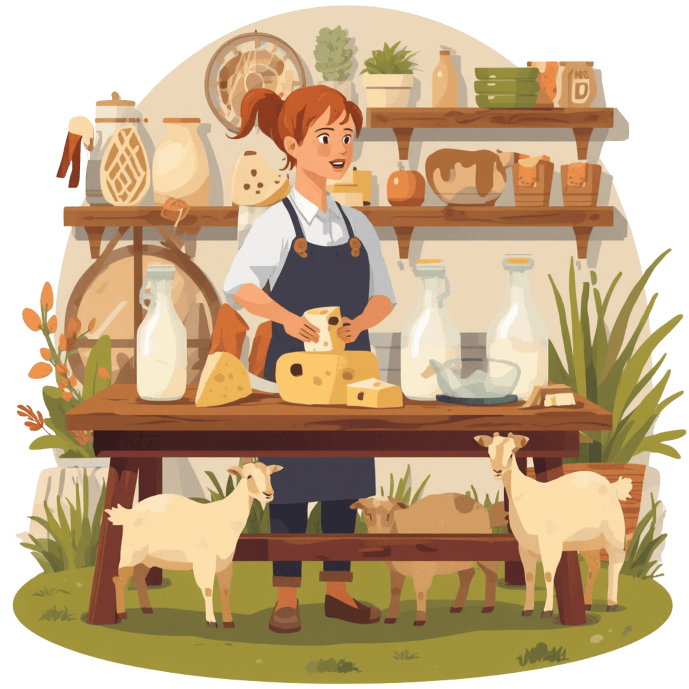
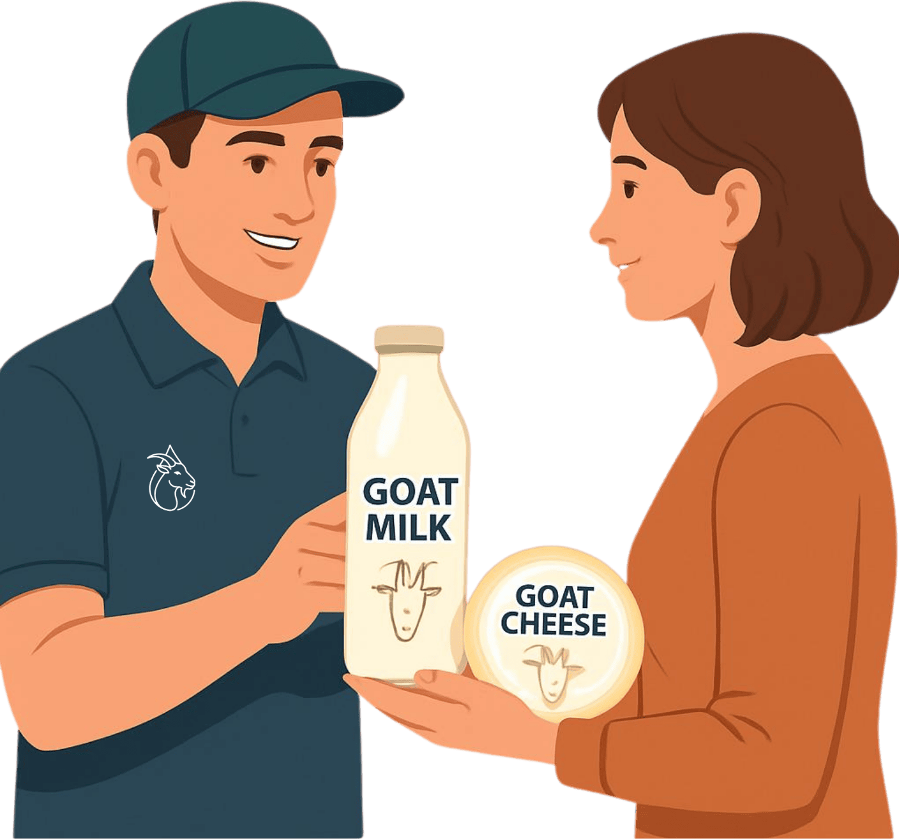
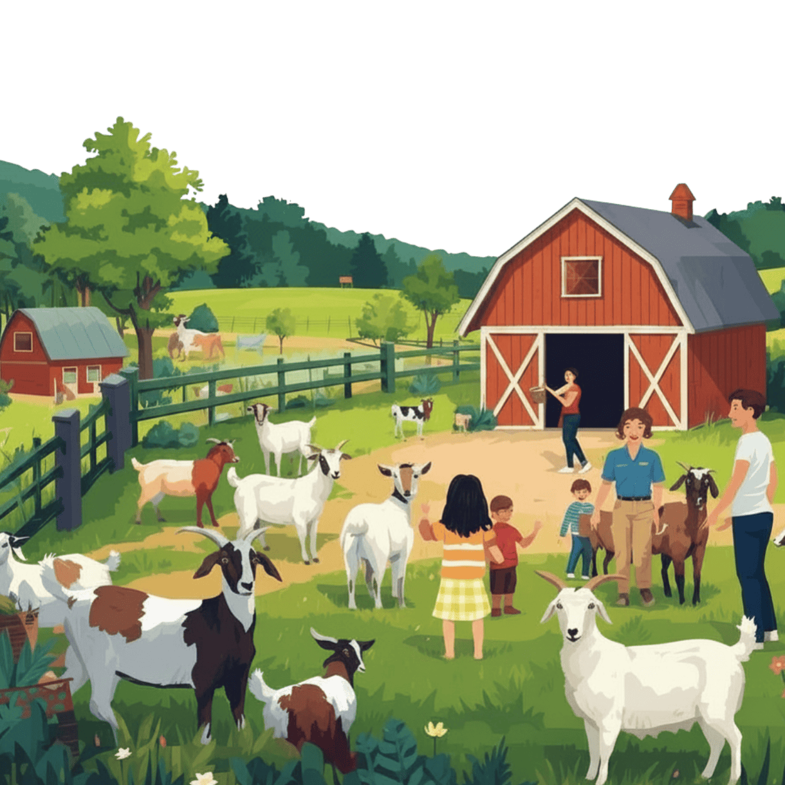
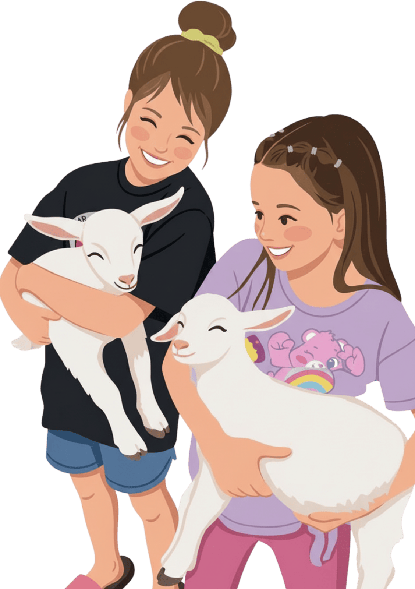

Fresh, small-batch, honest
Fresh goat milk and small-batch goat cheese, raised on a real farm in Pune. Not mass-produced, not rushed.
We're building a small-batch goat dairy farm just outside Pune, raising goats the slow way, making milk and cheese the honest way. Be the first to know when our first batch is ready.

What We're Building
We're not pretending to be bigger than we are. Hello Honey Bunny is a single farm near Pune, started by one family who wanted to do something real with their hands. No factory, no shortcuts, no mystery ingredients, just goats, grass, and time.

Fresh goat milk and small-batch goat cheese, raised on a real farm in Pune. Not mass-produced, not rushed.

We're setting up local delivery and pickup around Koregaon Park, Balewadi and Baner, so freshness never has to travel far.

A chance to see exactly where your milk comes from; open farm days for anyone curious about life on a real goat dairy.

Our baby goats visit schools and nurseries for gentle, joyful little sessions — think puppy yoga, but considerably more bleating.
Why “Honey Bunny”?
Hello Honey Bunny started with a simple idea: farming doesn't have to feel industrial to be serious. We're setting up a goat farm in the Pune countryside, built from scratch: proper shelters, healthy herds, and a lot of patience.
We're currently in our founding season: building shelters, bringing home our first goats, and learning the rhythms of the land.
Health & Nutrition
Detailed nutrition solutions to meet individual needs, focusing on improving overall health and well-being through personalized meal plans and guidelines.
Got Questions?
Goat milk has naturally smaller fat globules and forms a softer curd in the stomach than cow milk. That's why many people find it gentle on the gut.
Goat milk contains somewhat less lactose than cow milk, which some people with mild sensitivity find easier on their stomach. It's still dairy, though, so it's not appropriate for anyone with true lactose intolerance or milk allergy to consume without medical advice.
Fresh, well-handled goat milk has a clean, slightly sweet, mild taste. The “goaty” flavor people associate with goat milk usually comes from how it's handled and stored, not the milk itself.
Most goat milk naturally contains A2 beta-casein rather than the A1 type common in regular cow milk. Some people who feel digestive discomfort after cow milk find goat milk easier to tolerate — though if you have a diagnosed dairy allergy, please consult your doctor before trying any dairy.
Goat milk is naturally rich in lactic acid and fatty acids, which is why it's a popular base ingredient in natural soaps and skincare.
We're in our founding season, building shelters and bringing home our first goats. Join the waitlist above and we'll email you the moment we're ready to take orders.
Goat cheese tends to be tangier and creamier with a softer texture, largely because of the different fat and protein structure in the milk. Many people who find cow cheese heavy enjoy goat cheese as a lighter alternative.